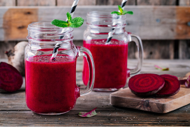

Jugo Detox Rojo

Ingredientes:
- 1 remolacha, pelada y cortada en trozos
- 1 zanahoria, pelada y en rodajas
- 1 manzana, sin corazón y en cuartos
- 1 trozo pequeño de jengibre fresco, pelado
- 1 limón, exprimido
- 1 taza de agua fría
- Coloca todos los ingredientes en una licuadora o extractor de jugo.
- Mezcla hasta obtener una consistencia suave.
- Si es necesario, cuela el jugo para obtener una textura más fina.
- Sirve el jugo detox de remolacha en un vaso y disfruta de inmediato.